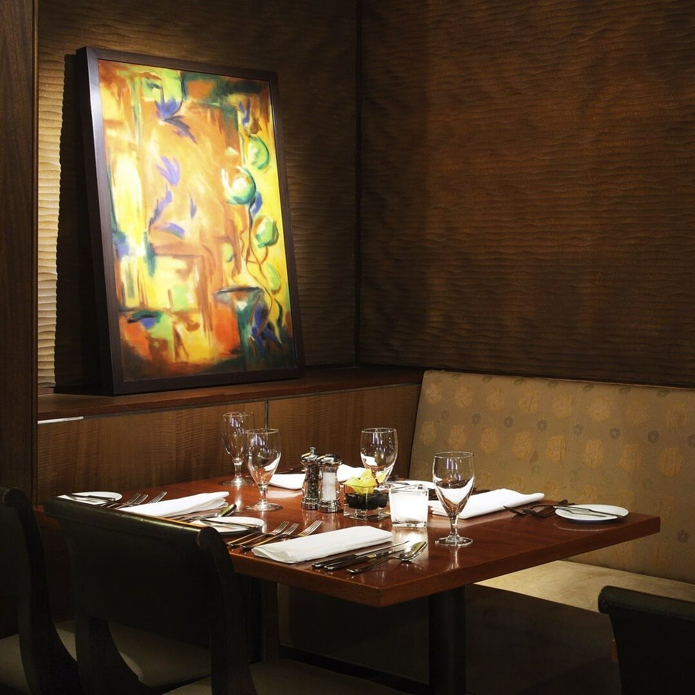
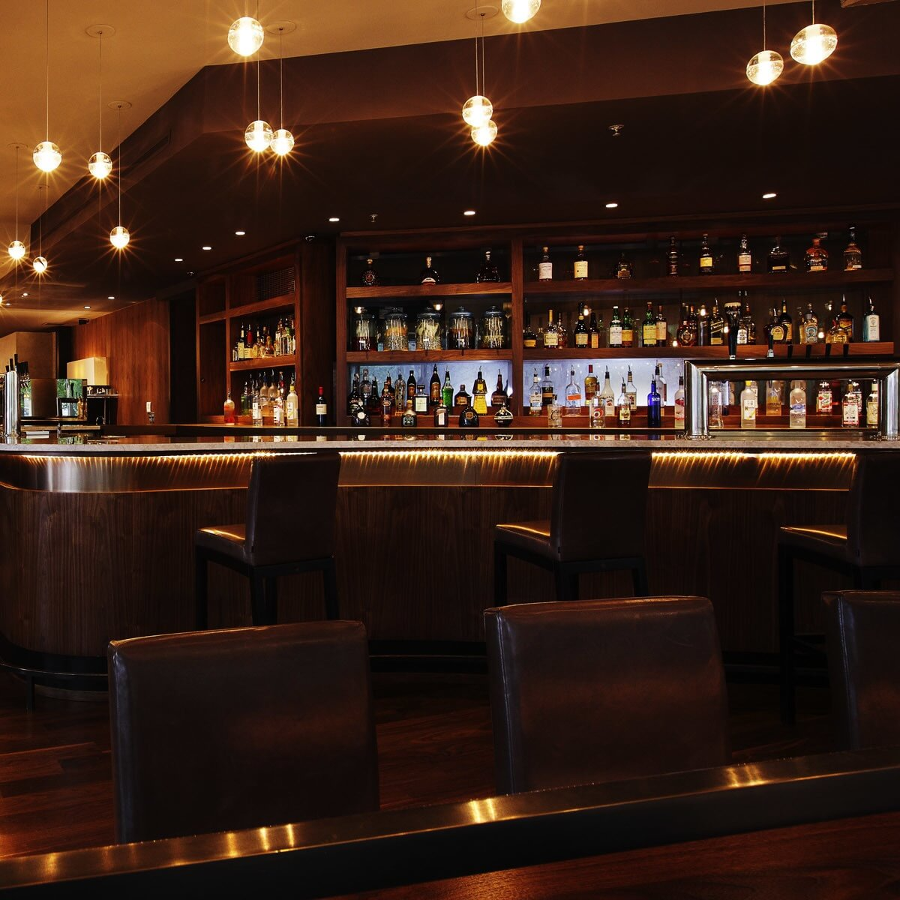
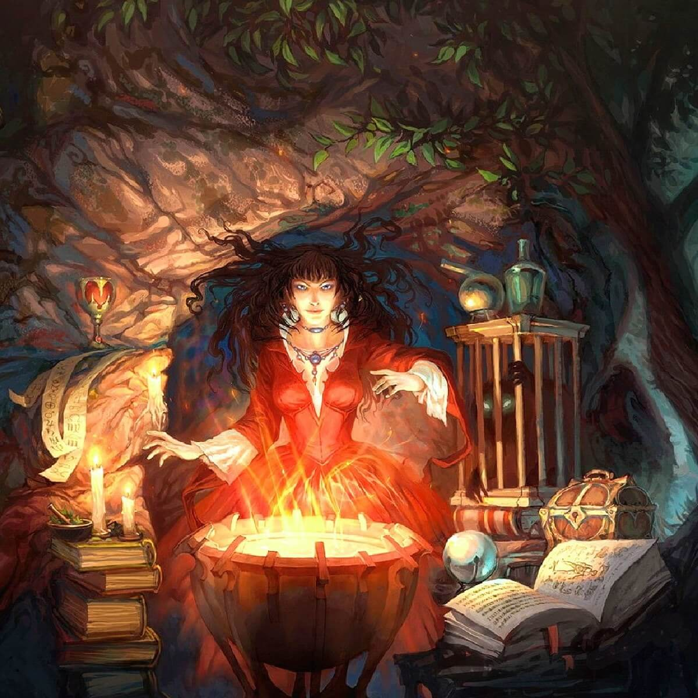

For those who participate in our events for the first time, we have compiled a small instruction that will help you understand what and how is happening at club meetings.
Everything is quite simple:
in the room there are tables, at each of which one game is played. That is, a table is assigned to each group for the duration of the game. The tables are numbered, and at the entrance there is always a timetable, from which you can find out where the game of your choice will take place.
We kindly ask you not to be late so that the game does not start without you.
Upcoming events

Meeting at "Ulei"
28.08.2020 // Club meeting
We are pleased to announce that we will hold a joint monthly meeting organised alongside Rolekon on 22.08.2020 from 7.00pm at the "Ulei".
Late night readings
24.08.2020 // Podcast
Today we present to your attention a somewhat “informal” review - this is a review of the book-game “The Entrance”.

A game of shadows, pt.4
22.08.2020 // Game session
Standard format games take 3-4 hours and dominate our events. To save time, we recommend using prepared character sheets (pregens) for standard format games.

Meeting at SSTU's Library
16.08.2020 // Club meeting
We meet at the main entrance of SSTU's Library at 18:00pm. This day we playing Eldrith Horror: Under the Pyramids.

Late night readings
15.08.2020 // Podcast
In her first announced "adult" novel, Veronica Roth used a non-standard move: at the very beginning, we see the everyday life of the heroes the world is saved.

A game of shadows, pt.3
14.08.2020 // Game session
Standard format games take 3-4 hours and dominate our events. To save time, we recommend using prepared character sheets (pregens) for standard format games.

A game of shadows, pt.2
08.08.2020 // Game session
Standard format games take 3-4 hours and dominate our events. To save time, we recommend using prepared character sheets (pregens) for standard format games.

Late night readings
08.08.2020 // Podcast
The Revival of Time is a rare occasion when fanfiction not only makes it to publication, but also gets the approval of the original author.

A game of shadows, pt.1
01.08.2020 // Game session
Standard format games take 3-4 hours and dominate our events. To save time, we recommend using prepared character sheets (pregens) for standard format games.